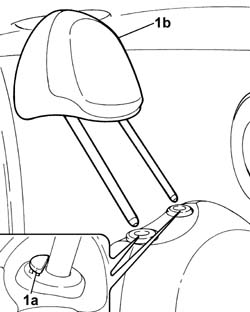

7045B10 L/H OR R/H FRONT SEAT HEAD RESTRAINT - R+R
- Path
- Procedures > 70 FITTINGS > 7045 FRONT SEATS > 7045B FRONT SEAT HEAD RESTRAINT/ARM REST > 7045B10 L/H OR R/H FRONT SEAT HEAD RESTRAINT - R+R
- Kind
- repair procedure (removal / refitting; the operation number is the code)
- Applies to
- all engines; all production periods
- Interactive page
- https://sloeber94.github.io/elrnDB-fUlss/en/#/179007856
Applies to: all engines; all production periods
 Removing
Removing
 Refitting
Refitting- Completely lower the seat using the control.
- Raise the head restraint completely until it is in the end of travel position.
1. Press the outer button (1a) and release the head restraint (1b) from the housing.

Applies to: all engines; all production periods
Refitting
Removing- Fit the head restraint in the housing, inserting the pins in the bushes on the front seat backrest.
- Press the inner button and check that the head restraint moves upwards correctly.
- Check that the head restraint is locked in the end of travel position.
- Place the seat in the correct driving position.
Topics that link to this page (9)
- 7045A34 MANUAL DEVICE FOR ADJUSTING SEAT HEIGHT - R R WITH SEAT REMOVED
- 7045A36 DRIVERS SEAT MANUAL HEIGHT ADJUSTMENT DEVICE - R R
- 7045B06 GUIDE BUSH FOR (ONE), FRONT SEAT HEAD RESTRAINT LEFT OR RIGHT - R.R.
- 7045B14 FRONT SEAT HEAD RESTRAINT TRIM, LEFT OR RIGHT - R.R.
- 7045D50 TRIM OF ON EFRONT SEAT HEAD RESTRAINT LH OR RH RR
- 7045D51 TRIM OF ONE FRONT SEAT HEAD RESTRAINT LH OR RH RR WITH HEAD RESTRAINT REMOVED
- 7045J50 DRIVER'S SIDE FRONT SEAT POSITION MEMORISATION SYSTEM ECU - R+R FOLLOWING ELECTRICAL WIRING CHECK
- 7045M10 FRONT SEAT HEATING SYSTEM SWITCH - R+R
- 7065A14 ANCHORAGE ROD FOR , (ONE), FRONT SEAT BELT LEFT OR RIGHT - R.R.